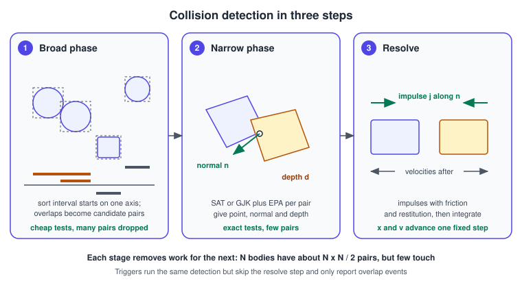
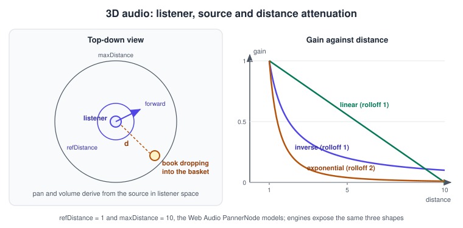
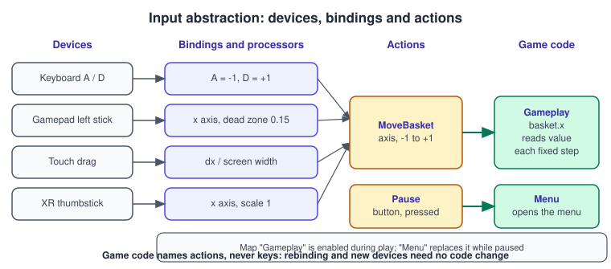

Physics, Audio and Input Basics
|
This content was generated with the assistance of AI and should be verified against the official documentation before being relied on in production. |
Rendering shows a world; physics, audio and input make it respond. This page covers the basic ideas behind the three systems that almost every engine ships next to its renderer, and how to use the built-in versions in the six libraries of this section. It was checked in November 2026 against Unity 6.3 LTS (built-in 3D physics and the Input System package), Unreal Engine 5.8 (Chaos physics and Enhanced Input), RealityKit and AVFoundation on the version 26 Apple platforms, the Web Audio API and Gamepad API in current browsers, and OpenXR 1.1 for XR controllers. The running example is the game of this section, "catch the falling books": the books are rigid bodies, the basket is a trigger, a thud is a positioned sound, and the basket is moved by an action.
The fixed-step loop that drives physics is explained in The Game Loop and Frame Timing; the entity model used by the examples is in Entity Component System.
Rigid-body physics
A rigid body is an object that never deforms. Its state is a position \(x\), an orientation \(q\) (a unit quaternion), a linear velocity \(v\) and an angular velocity \(\omega\), plus the constants mass \(m\) and an inertia tensor \(I\) that says how hard it is to spin around each axis. A body with infinite mass (stored as inverse mass 0) is static: the shelf. A kinematic body is moved by code, not by forces, but pushes dynamic bodies: a basket driven by the player. A dynamic body reacts to forces: a falling book.
Integration
Each fixed step turns forces into motion. The method used almost everywhere is semi-implicit Euler (also called symplectic Euler): update the velocity first, then use the new velocity to update the position:
\[ v_{ n+1 } = v_n + \frac{ F }{ m } \Delta t \qquad x_{ n+1 } = x_n + v_{ n+1 } \Delta t \]
It is as cheap as explicit Euler but far more stable for oscillating systems such as springs, and it conserves energy well over long runs. For rotation, the orientation is advanced with the angular velocity and renormalised:
\[ q_{ n+1 } = \operatorname{normalize}\left( q_n + \tfrac{ 1 }{ 2 } \Delta t \, \omega_q \, q_n \right) \]
where \(\omega_q = (\omega_x, \omega_y, \omega_z, 0)\) is the angular velocity as a pure quaternion; see Rotations and Quaternions. Higher-order methods (Verlet, Runge-Kutta 4) exist, but contact-heavy games prefer the stable first-order method plus a good solver. The step must be constant for the results to be reproducible, hence the fixed timestep and the interpolation of rendered transforms described in the game-loop page.
Colliders
A rigid body carries one or more colliders: simple shapes that approximate its volume, because exact triangle meshes are far too expensive to test.
| Shape | Notes |
|---|---|
Sphere, box, capsule |
Cheapest and most robust; use them for almost everything (a book is a box, a character is a capsule) |
Convex hull or convex mesh |
One shape wrapped around a mesh; supports dynamic bodies; vertex or face counts are limited by the engine |
Compound |
Several shapes under one body; how a concave object such as a chair becomes dynamic |
Triangle mesh |
Any concave surface, but usually only for static bodies such as the room |
Heightfield |
Terrain stored as a grid of heights |
Two settings change how a collider behaves. A trigger (a "sensor") detects overlap and reports an event but does not push anything: the catch area of the basket is a trigger. Layers and a collision matrix decide which categories of object can collide with which, so that the basket tests books and ignores the shelf. Material properties are friction (Coulomb: the tangential impulse is limited to \(\mu\) times the normal impulse) and restitution, the bounciness \(e\), where 0 is a lump of clay and 1 an ideal ball.
Collision detection: broad phase, narrow phase, resolve
Testing every body against every other costs \(N(N-1)/2\) pair tests, which is too slow for more than a few hundred bodies. Engines split the work into stages that each remove work from the next.

Marker 1 in Figure 1 is the broad phase. Every collider has an axis-aligned bounding box (AABB), and only the boxes are compared. The classic algorithm, sweep and prune, projects each box onto an axis, sorts the interval endpoints and reports the pairs whose intervals overlap; it exploits temporal coherence, because the sorted order barely changes between steps. Other broad phases use a uniform grid or spatial hash (even object sizes) or a dynamic AABB tree (very different sizes, also used for ray casts). Engines expose the choice: Unity’s Physics project settings have a broad-phase type option.
Marker 2 is the narrow phase, an exact test of one candidate pair. Two convex shapes are disjoint when some axis separates them, which is the separating axis theorem (SAT) used for boxes. General convex shapes use GJK, which computes the distance between two shapes through support points of their Minkowski difference, and EPA, which finds the penetration depth and direction when they overlap. The output is a contact manifold: one to four contact points, a normal \(n\) and a penetration depth \(d\). Manifolds are cached between steps (persistent contacts) so that a resting stack stays stable.
Marker 3 is the solver. For each contact the solver applies an impulse along the normal that cancels the approaching velocity, scaled by the restitution, and a friction impulse along the tangents. For two bodies with relative velocity \(v_{ rel }\) at the contact:
\[ j = \frac{ -(1 + e)\,(v_{ rel } \cdot n) }{ m_A^{-1} + m_B^{-1} + \text{ rotational terms } } \]
and \(j\,n\) is added to \(A\) and subtracted from \(B\). Because applying one contact disturbs the others, solvers iterate, in the sequential impulses (projected Gauss-Seidel) style or its soft-step variants. More iterations make stacks stiffer and cost more time; they are a standard quality setting. Finally the engine moves bodies out of overlap (position correction) and puts bodies that have been at rest for a while to sleep, skipping them until something touches them.
Tunnelling and continuous collision detection
A fast thin object can move from one side of a thin collider to the other inside a single step so that no overlap is ever seen:
tunnelling. The examples are a book thrown at a shelf board that is 4 cm thick. The remedies are a smaller step or substeps,
thicker colliders, and continuous collision detection (CCD), which sweeps the shape along its motion and finds the time of
impact. Unity exposes it as Rigidbody.collisionDetectionMode (ContinuousDynamic, ContinuousSpeculative), Unreal as the
Use CCD option on a body, and most libraries offer speculative contacts, which add a contact before the objects touch. CCD costs
more, so enable it only for bullets and other fast objects.
The C++ core of a rigid-body step
The following C++ is a deliberately small, complete implementation of the pieces above for the Bookshelf: a body with semi-implicit Euler, a sweep-and-prune broad phase over AABBs, and an impulse for a sphere-sphere contact. It shows the structure; real engines add rotation, manifolds, friction and a solver loop.
#include <algorithm>
#include <cmath>
#include <utility>
#include <vector>
struct Vec3 { float x = 0, y = 0, z = 0; };
inline Vec3 operator+(Vec3 a, Vec3 b) { return {a.x + b.x, a.y + b.y, a.z + b.z}; }
inline Vec3 operator-(Vec3 a, Vec3 b) { return {a.x - b.x, a.y - b.y, a.z - b.z}; }
inline Vec3 operator*(Vec3 a, float s) { return {a.x * s, a.y * s, a.z * s}; }
inline float dot(Vec3 a, Vec3 b) { return a.x * b.x + a.y * b.y + a.z * b.z; }
struct Body {
Vec3 position, velocity;
float invMass = 1.0f; // 0 for static bodies such as the shelf
float radius = 0.1f; // sphere collider
float restitution = 0.3f;
};
// 1. Integration: semi-implicit Euler
void integrate(Body& b, Vec3 force, float dt) {
if (b.invMass == 0.0f) return;
b.velocity = b.velocity + force * (b.invMass * dt); // velocity first
b.position = b.position + b.velocity * dt; // then position with the new velocity
}
// 2. Broad phase: sweep and prune on the X axis
std::vector<std::pair<int, int>> broadPhase(const std::vector<Body>& bodies) {
struct Interval { float lo, hi; int id; };
std::vector<Interval> xs;
for (int i = 0; i < (int)bodies.size(); ++i) {
xs.push_back({bodies[i].position.x - bodies[i].radius,
bodies[i].position.x + bodies[i].radius, i});
}
std::sort(xs.begin(), xs.end(), [](const Interval& a, const Interval& b) { return a.lo < b.lo; });
std::vector<std::pair<int, int>> pairs;
for (size_t i = 0; i < xs.size(); ++i) {
for (size_t j = i + 1; j < xs.size() && xs[j].lo <= xs[i].hi; ++j) { // intervals overlap
pairs.emplace_back(xs[i].id, xs[j].id);
}
}
return pairs; // candidates only: the narrow phase decides
}
// 3. Narrow phase and resolve: sphere against sphere
void resolve(Body& a, Body& b) {
Vec3 d = b.position - a.position;
float dist = std::sqrt(dot(d, d));
float minDist = a.radius + b.radius;
if (dist >= minDist || dist == 0.0f) return; // not touching
Vec3 n = d * (1.0f / dist); // contact normal from a to b
float vn = dot(b.velocity - a.velocity, n); // relative speed along the normal
if (vn > 0.0f) return; // already separating
float e = std::min(a.restitution, b.restitution);
float j = -(1.0f + e) * vn / (a.invMass + b.invMass); // impulse magnitude
a.velocity = a.velocity - n * (j * a.invMass);
b.velocity = b.velocity + n * (j * b.invMass);
float penetration = minDist - dist; // push apart so they stop overlapping
float total = a.invMass + b.invMass;
a.position = a.position - n * (penetration * a.invMass / total);
b.position = b.position + n * (penetration * b.invMass / total);
}
void step(std::vector<Body>& bodies, float dt) {
for (Body& b : bodies) integrate(b, Vec3{0.0f, -9.81f / (b.invMass > 0 ? b.invMass : 1.0f), 0.0f}, dt);
for (auto [i, k] : broadPhase(bodies)) resolve(bodies[i], bodies[k]);
}The gravity term is written as the force m * g, divided by the mass inside integrate, so heavy and light bodies fall at
the same rate. That is the physical rule that engines implement by applying gravity as an acceleration instead.
Ray casts and picking
A ray cast asks "what does this ray hit first?". It is the tool for picking, line of sight, bullets and ground checks.
Picking a book with the mouse means building a world-space ray from a pixel: unproject the pixel’s normalised device
coordinates through the inverse view-projection matrix (see
Coordinate Spaces and Transforms), then test the ray against bounding
volumes, usually through a BVH, and only then against triangles. Java 3D used the same idea under the names PickRay and
PickCanvas.
The standard ray-box test is the slab method. A box is the intersection of three slabs; the ray enters and leaves each slab at parameters \(t_1\) and \(t_2\), and it hits the box when the latest entry is before the earliest exit:
\[ t_{ near } = \max_i \min(t_{1,i}, t_{2,i}) \qquad t_{ far } = \min_i \max(t_{1,i}, t_{2,i}) \qquad \text{hit if } t_{ near } \le t_{ far } \text{ and } t_{ far } \ge 0 \]
#include <algorithm>
#include <limits>
struct Ray { float o[3]; float d[3]; }; // origin and direction
struct Aabb { float lo[3]; float hi[3]; };
// Returns true and the entry distance when the ray hits the box.
bool rayAabb(const Ray& r, const Aabb& b, float& tHit) {
float tNear = -std::numeric_limits<float>::infinity();
float tFar = std::numeric_limits<float>::infinity();
for (int i = 0; i < 3; ++i) {
const float inv = 1.0f / r.d[i]; // IEEE infinity handles d[i] == 0
float t1 = (b.lo[i] - r.o[i]) * inv;
float t2 = (b.hi[i] - r.o[i]) * inv;
if (t1 > t2) std::swap(t1, t2);
tNear = std::max(tNear, t1);
tFar = std::min(tFar, t2);
if (tNear > tFar) return false; // the slabs do not overlap
}
if (tFar < 0.0f) return false; // the box is behind the ray
tHit = tNear < 0.0f ? 0.0f : tNear; // origin inside the box: hit at 0
return true;
}Source: three.js documentation: Raycaster.
In an engine you rarely write that yourself. In three.js, picking the book under the pointer is:
import * as THREE from 'three';
const raycaster = new THREE.Raycaster();
const pointer = new THREE.Vector2();
function pick(event, camera, shelf) {
// normalised device coordinates: -1 to +1, with +Y up
pointer.x = (event.clientX / window.innerWidth) * 2 - 1;
pointer.y = -(event.clientY / window.innerHeight) * 2 + 1;
raycaster.setFromCamera(pointer, camera);
const hits = raycaster.intersectObjects(shelf.children, true); // nearest first
return hits.length ? hits[0].object : null;
}
window.addEventListener('pointerdown', (e) => {
const book = pick(e, camera, shelf);
if (book) book.material.emissive?.set(0x442200); // highlight the picked book
});Source: three.js documentation: Raycaster.
The same query in Unity uses the physics engine’s colliders:
using UnityEngine;
using UnityEngine.InputSystem;
public class BookPicker : MonoBehaviour
{
[SerializeField] Camera cam;
[SerializeField] LayerMask bookLayer;
void Update()
{
if (!Mouse.current.leftButton.wasPressedThisFrame) return;
Vector2 screen = Mouse.current.position.ReadValue();
Ray ray = cam.ScreenPointToRay(screen);
if (Physics.Raycast(ray, out RaycastHit hit, 10f, bookLayer))
{
if (hit.rigidbody != null)
hit.rigidbody.AddForceAtPosition(ray.direction * 2f, hit.point, ForceMode.Impulse);
}
}
}Source: Unity Scripting API: Physics.Raycast.
And in Unreal Engine 5.8, a line trace on a collision channel:
void ABookPicker::PickBook(const FVector& Start, const FVector& Direction)
{
FHitResult Hit;
FCollisionQueryParams Params(SCENE_QUERY_STAT(PickBook), /*bTraceComplex=*/false, this);
const FVector End = Start + Direction * 1000.f; // centimetres
if (GetWorld()->LineTraceSingleByChannel(Hit, Start, End, ECC_Visibility, Params))
{
if (UPrimitiveComponent* Comp = Hit.GetComponent())
{
Comp->AddImpulseAtLocation(Direction * 20000.f, Hit.ImpactPoint);
}
}
}The engines' built-in physics
| Library | Built-in physics | Notes |
|---|---|---|
OpenGL, WebGL |
None |
Add a library: Bullet, Jolt, PhysX or Box2D in C++; Rapier, cannon-es or ammo.js in JavaScript. three.js has a |
Metal, RealityKit |
RealityKit physics components ( |
SceneKit and SpriteKit have their own engines; SceneKit is deprecated in the version 26 releases |
Vulkan |
None |
A rendering API only; use a physics library |
Unity 6.3 |
NVIDIA PhysX for 3D ( |
|
Unreal Engine 5.8 |
Chaos Physics (the default since UE 5.0): rigid bodies, destruction, vehicles, cloth |
Physics settings with substepping; the Chaos Visual Debugger records simulations |
Spatial audio
A game’s sound is positioned in the same world as its visuals. The model has three parts:
-
A listener, normally attached to the camera, with a position, an orientation and optionally a velocity.
-
Sources, emitters with a position, a sound and attenuation parameters; sounds play from buffers, or stream from disk for music and long ambience.
-
A mixer, which sums sources into buses (music, effects, voice) with volume, effects (reverb, filters) and a final limiter.
For every source the engine computes the source’s position relative to the listener, in listener space, and derives:
-
Distance attenuation: gain falls with distance \(d\) from the source. The usual models, with reference distance \(d_{ ref }\), maximum distance \(d_{ max }\) and rolloff \(r\), are, as defined by the Web Audio API:
\[ g_{ inverse } = \frac{ d_{ ref } }{ d_{ ref } + r (\max(d, d_{ ref }) - d_{ ref }) } \qquad g_{ linear } = 1 - r \frac{ \text{clamp}(d, d_{ ref }, d_{ max }) - d_{ ref } }{ d_{ max } - d_{ ref } } \qquad g_{ exp } = \left( \frac{ \max(d, d_{ ref }) }{ d_{ ref } } \right)^{ -r } \]
-
Panning: the left and right balance from the source’s direction. Equal-power panning moves between speakers while keeping loudness constant. HRTF (head-related transfer function) panning filters the sound with the way a human head and ears colour it from each direction, so headphones can reproduce up, down, front and back.
-
Doppler shift: the heard frequency is \(f' = f \, (c + v_{ listener }) / (c - v_{ source })\), with the velocities measured along the line between them and counted positive when moving toward the other, and \(c\) the speed of sound. A falling book is slow, so the effect is small; it matters for vehicles and projectiles.
-
Cones and occlusion: a directional source is louder inside its cone, and engines lower the volume and low-pass the sound of a source behind a wall, using ray casts like the ones above.

Figure 2 shows the geometry on the left and the three models on the right. The inverse model, which is closest to a real point source, falls fast near the source and slowly far away, so it never reaches silence. The linear model reaches zero at the maximum distance, which lets a game silence far sources entirely and save mixing work. The exponential model falls faster. In the Web Audio API the maximum distance matters only for the linear model; engines usually apply it to all models as a cut-off.
In a browser, the Web Audio API provides the whole chain. The thud of a book landing, three metres in front of the listener:
const ctx = new AudioContext();
async function playThud(position) {
if (ctx.state === 'suspended') await ctx.resume(); // autoplay policy: needs a user gesture first
const response = await fetch('thud.ogg');
const buffer = await ctx.decodeAudioData(await response.arrayBuffer());
const source = new AudioBufferSourceNode(ctx, { buffer });
const panner = new PannerNode(ctx, {
panningModel: 'HRTF',
distanceModel: 'inverse',
refDistance: 1,
maxDistance: 10,
rolloffFactor: 1,
positionX: position.x, positionY: position.y, positionZ: position.z,
});
source.connect(panner).connect(ctx.destination);
source.start();
}
// the listener follows the camera
ctx.listener.positionX.value = camera.position.x;
ctx.listener.positionY.value = camera.position.y;
ctx.listener.positionZ.value = camera.position.z;
playThud({ x: 0, y: 0.05, z: -3 });Source: MDN: PannerNode.
On Apple platforms, AVAudioEngine with an AVAudioEnvironmentNode provides the same chain, and PHASE
(Physical Audio Spatialization Engine) adds geometry-aware occlusion and reverb for games. The environment node needs
mono sources to spatialise them:
import AVFoundation
let engine = AVAudioEngine()
let environment = AVAudioEnvironmentNode()
let player = AVAudioPlayerNode()
engine.attach(environment)
engine.attach(player)
let file = try AVAudioFile(forReading: Bundle.main.url(forResource: "thud", withExtension: "caf")!)
engine.connect(player, to: environment, format: file.processingFormat) // mono file
engine.connect(environment, to: engine.mainMixerNode, format: nil)
environment.listenerPosition = AVAudio3DPoint(x: 0, y: 0, z: 0)
environment.distanceAttenuationParameters.distanceAttenuationModel = .inverse
environment.distanceAttenuationParameters.referenceDistance = 1
environment.distanceAttenuationParameters.maximumDistance = 10
environment.distanceAttenuationParameters.rolloffFactor = 1
player.renderingAlgorithm = .HRTFHQ
player.position = AVAudio3DPoint(x: 0, y: 0.05, z: -3)
try engine.start()
player.scheduleFile(file, at: nil)
player.play()Engines wrap the same concepts. In Unity, an AudioSource becomes 3D with spatialBlend = 1, minDistance, maxDistance and a
rolloffMode, a single AudioListener (usually on the camera) receives, and the Audio Mixer holds the buses and effects. In Unreal
Engine 5.8, sound waves, Sound Cues and MetaSounds feed the audio engine, and Sound Attenuation assets carry the distance, spatialisation
and occlusion settings that UGameplayStatics::PlaySoundAtLocation applies. Low-latency native audio on Android uses Oboe,
which wraps AAudio and OpenSL ES. Latency is a property of the buffer size: a 480-frame buffer at 48 kHz is 10 ms, and a game
that triggers sound effects from input wants as small a buffer as the hardware tolerates without underruns.
Input
Games read many kinds of devices: keyboards, mice and pointers, touch screens, gamepads, XR controllers and motion sensors. Each platform reports them differently, so engines add an input abstraction: game code asks about actions ("MoveBasket", "Pause"), and a configuration maps devices to actions.

An action has a type: a button (pressed, released, held), an axis (a value in -1 to +1) or a two-dimensional vector (a stick). A binding connects a control to an action, and processors transform the value on the way: a dead zone ignores the small stick drift of a worn controller (commonly 0.1 to 0.25, applied radially for a two-axis stick), scale and invert adjust it, and normalise clamps vectors. Action maps (Unity) or mapping contexts (Unreal) group actions that apply in one mode of the game, and are enabled or disabled as modes change: gameplay, menu, vehicle. Because the game names actions, rebinding and new device support need no code change.
Two timing rules matter. Read the value of continuous actions (move axes) in the fixed step or the frame as needed, but use the event for one-shot actions, and latch events that happen between fixed steps so none is lost. Second, sample input as late as possible in the frame, since every millisecond before the sample is latency.
Devices and platforms
| Device | How platforms expose it |
|---|---|
Keyboard, mouse |
Key events with a layout-independent code ( |
Touch |
Pointers with identifiers and pressure; gestures from the OS (tap, drag, pinch); multi-touch needs per-pointer tracking |
Gamepad |
Web Gamepad API with the "standard" mapping; GameController framework on Apple platforms; |
Motion sensors |
Android rotation vector sensor ( |
XR controllers |
OpenXR actions grouped in action sets and bound to interaction profiles; WebXR input sources; ARCore and ARKit use the touch screen and the device pose |
OpenXR is the same idea in standard form: an application declares actions, suggests bindings for each controller profile, and the runtime resolves them, so a game works on controllers it never saw. The sensor and AR input path is continued in Augmented and Mixed Reality Basics.
The Unity Input System package (the com.unity.inputsystem package, 1.x) expresses the diagram of Figure 3 in code. Actions can
also be authored in an Input Actions asset in the Editor; this is the script form:
using UnityEngine;
using UnityEngine.InputSystem;
public class BasketController : MonoBehaviour
{
InputAction move;
[SerializeField] float speed = 1.2f;
void OnEnable()
{
move = new InputAction("MoveBasket", InputActionType.Value, expectedControlType: "Axis");
move.AddCompositeBinding("1DAxis")
.With("Negative", "<Keyboard>/a")
.With("Positive", "<Keyboard>/d");
move.AddBinding("<Gamepad>/leftStick/x", processors: "axisDeadzone(min=0.15)");
move.Enable();
}
void OnDisable() => move.Disable();
void FixedUpdate()
{
float axis = move.ReadValue<float>(); // -1 to +1 from any device
transform.position += Vector3.right * (axis * speed * Time.fixedDeltaTime);
}
}In Unreal Engine 5.8 the Enhanced Input plugin, the default input system, defines the same split with UInputAction assets,
UInputMappingContext assets (the action map) and triggers and modifiers (the processors):
// BasketPawn.cpp
void ABasketPawn::BeginPlay()
{
Super::BeginPlay();
if (APlayerController* PC = Cast<APlayerController>(GetController()))
{
if (auto* Subsystem = ULocalPlayer::GetSubsystem<UEnhancedInputLocalPlayerSubsystem>(PC->GetLocalPlayer()))
{
Subsystem->AddMappingContext(GameplayContext, 0); // enable the "Gameplay" map
}
}
}
void ABasketPawn::SetupPlayerInputComponent(UInputComponent* PlayerInputComponent)
{
Super::SetupPlayerInputComponent(PlayerInputComponent);
if (auto* Input = Cast<UEnhancedInputComponent>(PlayerInputComponent))
{
Input->BindAction(MoveAction, ETriggerEvent::Triggered, this, &ABasketPawn::Move);
}
}
void ABasketPawn::Move(const FInputActionValue& Value)
{
AddMovementInput(FVector::RightVector, Value.Get<float>()); // MoveAction is an axis
}On the web there is no action layer, so a game reads events and the Gamepad API by hand. Gamepads are polled, not evented, and the "standard" mapping puts the left stick’s horizontal axis at index 0:
const keys = new Set();
window.addEventListener('keydown', (e) => keys.add(e.code)); // layout independent: 'KeyA', 'ArrowLeft'
window.addEventListener('keyup', (e) => keys.delete(e.code));
function readMoveAxis() {
let axis = 0;
if (keys.has('KeyA') || keys.has('ArrowLeft')) axis -= 1;
if (keys.has('KeyD') || keys.has('ArrowRight')) axis += 1;
const pad = navigator.getGamepads()[0]; // poll each frame
if (pad && pad.mapping === 'standard') {
const x = pad.axes[0];
if (Math.abs(x) > 0.15) axis += x; // dead zone
}
return Math.max(-1, Math.min(1, axis));
}Source: W3C: Gamepad.
Common mistakes
-
Moving dynamic bodies by setting their transform. Teleporting a rigid body each frame breaks velocity and contact resolution. Use forces and velocity changes, or make the body kinematic.
-
Scaling colliders non-uniformly. Many engines do not support it for spheres and capsules, and rotated non-uniform scale shears the shape.
-
Thin or tiny colliders and large mass ratios. A 1 kg book resting on a 1000 kg body is hard for any iterative solver. Keep ratios moderate and colliders reasonably thick.
-
Physics in a variable-rate callback. Apply forces in the fixed step. Applying them per frame makes results depend on frame rate.
-
Mesh colliders for everything. Use primitive shapes for dynamic objects; keep triangle meshes for static scenery.
-
Playing sound without a listener, or two listeners. Both give silence or confusion. Keep exactly one active listener.
-
Starting audio before a user gesture on the web. Browsers suspend the
AudioContextuntil the user interacts. -
Spatialising stereo files. A positioned source should be mono; a stereo file is already panned.
-
Hard-coding keys. Read actions, not
KeyA, so that rebinding and gamepads work. -
Ignoring dead zones. A stick that rests at 0.07 makes the basket creep.
Performance notes
-
Broad phase scales the world. For thousands of bodies the choice of broad phase and layer matrix dominates; reduce the number of layers that can touch.
-
Sleeping is free performance. Let resting bodies sleep, and avoid waking piles with a tiny constant force.
-
Lower the solver cost where nobody looks. Use fewer iterations for distant or decorative bodies, or simulate them with cheaper particles.
-
Query with filters. Ray casts that use layer masks and stop at the first hit are far cheaper than "all hits" and complex triangle tests.
-
Budget voices. Audio engines mix a limited number of voices (typically a few dozen to a hundred); give each sound a priority and a maximum instance count so a pile of books does not drop the music.
-
Stream long audio, decode short sounds. Music streams from disk; short effects stay decoded in memory for instant start.
-
Process input once per frame. Poll devices once, then let every system read the result.
Recent changes
| When | Change |
|---|---|
2021 to 2022 |
Unreal Engine 5 makes Chaos the default physics engine, replacing PhysX; Enhanced Input becomes the default input system from UE 5.1 |
Unity 2022 LTS and later |
The Input System package is the recommended input path, with the legacy Input Manager retained for compatibility |
2024 |
OpenXR 1.1 (April) folds widely used extensions into the core specification |
2025 |
Apple deprecates SceneKit in its version 26 releases and recommends RealityKit |
Where the older books are outdated
Selman’s Java 3D Programming and Sun’s The Java 3D API Specification cover picking and collision with PickRay,
PickCanvas and collision wake-up conditions, sound with PointSound, ConeSound and BackgroundSound rendered by a Java
Sound mixer, and input devices with a Sensor and InputDevice model including six-degree-of-freedom trackers. The
concepts (a ray against bounds, sources with a position and a cone, a tracked device as an input) are still the right ones.
The implementations changed: collision uses an engine’s physics scene and layers, positional audio is HRTF-based with a
mixer, and tracked devices are handled by OpenXR actions. Sood’s Pro Android Augmented Reality (2012) reads the deprecated
Sensor.TYPE_ORIENTATION, which Android has deprecated since API level 8; current code uses the rotation vector sensor or the pose
from ARCore.
See it in
OpenGL: Text, UI and Input; WebGL: three.js Interaction, Picking and Controls; Unity: 3D Physics, Audio and Input System; Unreal Engine: Chaos Physics and Collision, Audio and MetaSounds and Enhanced Input.